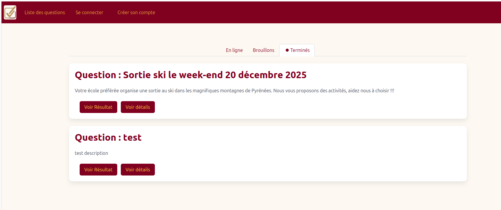

Développement d'une application web pour un client réel
Retour au portfolioDans le cadre d'une SAÉ du semestre 3, nous devions répondre à une demande réelle d'un client souhaitant automatiser la gestion de ses données via une interface web sécurisée. Le projet couvrait l'intégralité du cycle de développement : analyse des besoins, modélisation, développement et déploiement sur le serveur de l'IUT.
Durée : ~6 semaines | Équipe de 4 | Contrainte : cahier des charges client, délais imposés, déploiement réel

Techniques
Humaines
Travailler pour un vrai client change radicalement la nature d'un projet : les besoins exprimés ne sont pas toujours les besoins réels, et il faut savoir reformuler, valider et parfois pousser en arrière sur certaines demandes. Cette capacité à « traduire » un besoin métier en spécification technique est l'une des choses les plus concrètes que j'aie apprises dans ce projet.
Sur le plan technique, l'architecture MVC m'a appris à structurer mon code de façon maintenable. Au départ, tout mettre dans un seul fichier semblait plus simple ; en pratique, la séparation des couches a rendu le travail en équipe bien plus fluide et les évolutions beaucoup plus faciles à intégrer.